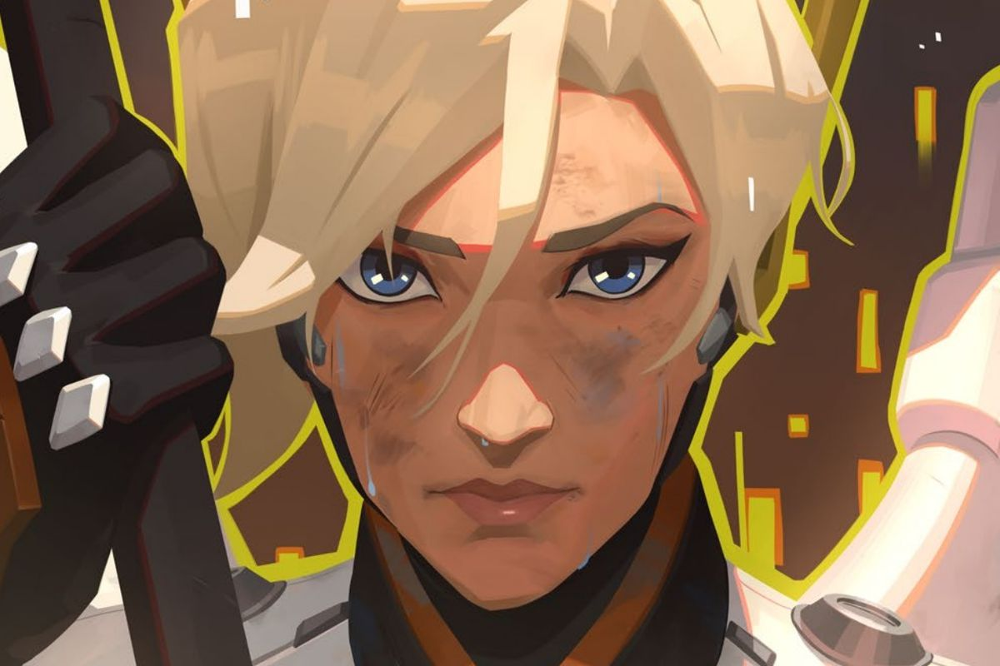

TAKE FLIGHT IN MERCY'S RECALL CHALLENGE!

Bring the new Overwatch short story, “Valkyrie” to life with story-inspired content available to unlock for a limited time. From now until December 2, players will be able to earn a player icon, 8 sprays, and a legendary Dr. Ziegler Mercy skin, for a total of 10 new rewards. DR. ZIEGLER - Learn how to unlock brand-new Mercy rewards WATCH TO EARN - Earn special Mercy-themed cosmetics by watching Twitch streams MERCY-THEMED GIVEAWAYS - Win a Samsung SSD, Mercy Statue, and more! HEROES NEVER DIE - Read the new short story, "Valkyrie"
We’re bringing the excitement of the action-packed short story into Overwatch by making some of the special content in the story available to unlock in-game. Wins in Quick Play, Competitive Play, or Arcade will all earn you a limited-time player icon, two sprays, and a new legendary skin: Dr. Ziegler! These special Mercy’s Recall Challenge rewards are a bonus on top of your normal earnings for playing in the Arcade.